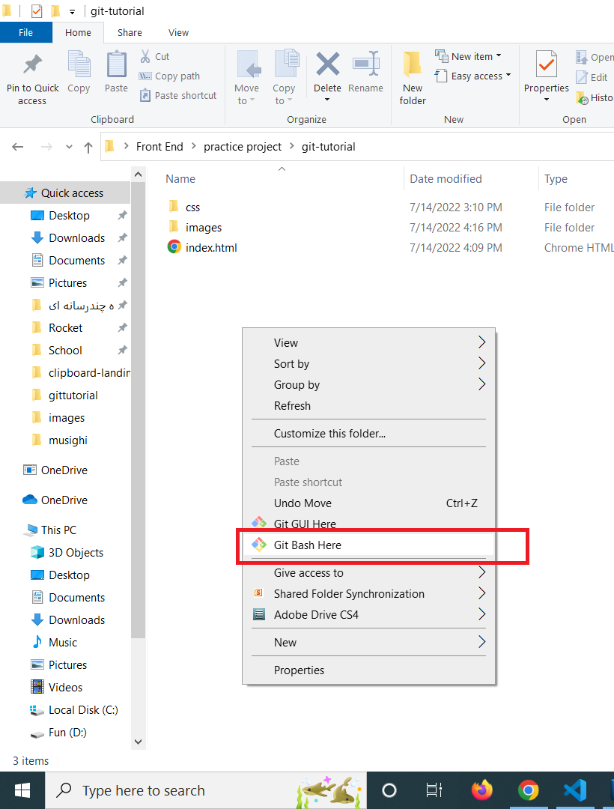

- قبل از هر چیزی باید تو سایت
'گیت هاب
ثبت نام کنید
برای این کار فقط کافیه یه ایمیل داشته باشید
بعد از کلیک روی لینک بالا ایمیل خودتون رو وارد کنید، در
مرحله بعد یه پسورد بدین
به همین راحتی ثبت نام شما انجام می شه.
-
حالا وقتشه که
برنامه گیت
رو دانلود کنید
تنظیمات خاصی نداره فقط با کلیک کردن رو دکمه
next
به راحتی نصب می شه
-
بعد از نصب وارد پوشه پروژه تون بشید و راست کلیک کنید. می بینید که یه گزینه با عنوان
Git Bash Here
همونطور که توی شکل نشون داده شده اضافه شده،
روش کلیک کنید
